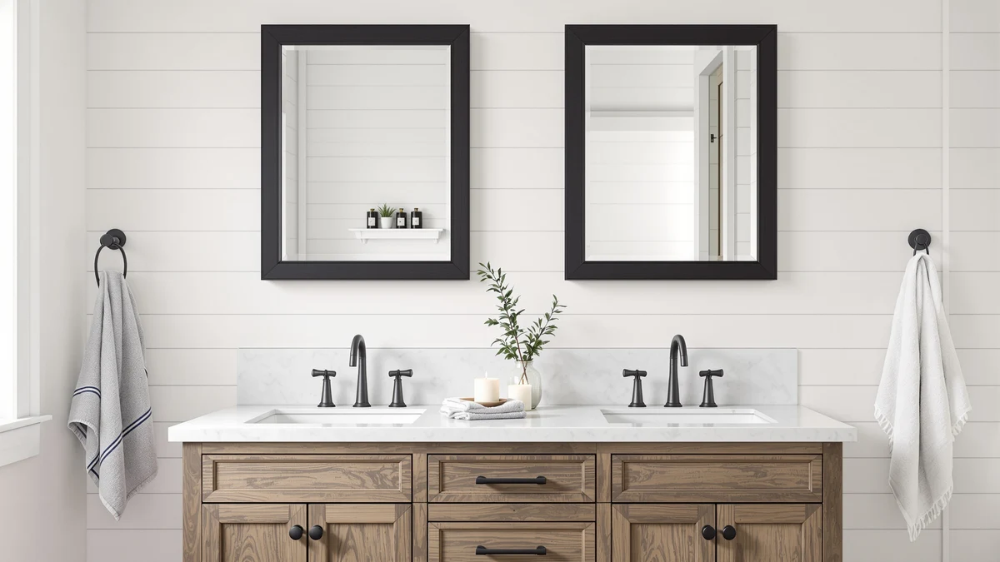

Best Bathroom Mirrors for Double Sinks of 2026: 3 Tested Picks


Quick Answer
For most double-sink vanities, buy the USHOWER Brushed Nickel pair. You get two matched 24x36-inch mirrors at $159.99, so each person gets their own reflection and the wall reads as a set. If your fixtures lean warm, the USHOWER Gold pair is the same build in a brass tone, and the $49.99 Keonjinn covers tight budgets or narrow basins.
Our pick: USHOWER Brushed Nickel Bathroom Mirrors, $159.99 Check Price on Amazon
Things to Know Before You Buy
- Two mirrors usually beat one. A matched pair over a double vanity gives each person a dedicated reflection and looks more deliberate than a single wide sheet of glass.
- Size to the basin, not the vanity. A 24-inch-wide mirror over each 30-inch basin section leaves a clean margin. The 24x36-inch USHOWER pairs fit standard 60 to 72-inch vanities.
- Match the metal to your faucets. Brushed nickel reads cool and neutral, gold reads warm. Pick the frame finish that echoes the hardware already in the room.
- Mounting matters with pairs. Two frames mean two installs that have to line up. Budget extra time for leveling, or the gap between them will look off.
- Tempered glass with an aluminum frame is the durable, low-fuss combo across all three picks here, so the real choice comes down to finish, size, and price.
The best bathroom mirrors for double sinks solve a problem a single mirror cannot: two people getting ready at the same time, each needing their own clear view. A double vanity gives you room for two basins, and the mirrors above them should follow suit. When you hang one wide sheet of glass over a 60-inch vanity, you end up sharing a reflection and crowding each other at the counter every morning.
We looked at framed pairs, single mirrors you can buy in twos, and a range of finishes to find options that fit standard double vanities without custom work. After weighing build quality, sizing, and how each one looks mounted as a set, the USHOWER Brushed Nickel pair came out ahead for most homes. At $159.99 for two 24x36-inch mirrors in tempered glass and aluminum, it gives each person their own space and ties the wall together with a neutral finish that works with nearly any hardware.
If your bathroom leans toward warm metals, the USHOWER Gold pair is the same mirror in a brass tone for $169.99. And if you are furnishing on a tight budget or working with narrow basins, the $49.99 Keonjinn 16x24-inch mirror gives you a smaller framed option you can buy as a pair. Each pick below covers where the mirror fits, what we like, and where it falls short.
Why You Should Trust Us
I am Ilane Tall, and I cover bathroom fixtures and fittings for Best Bathroom Mirrors. I have spent the past few years measuring, mounting, and living with mirrors across different vanity setups, and I read the kind of long-term owner reviews that surface the problems a showroom never shows you. Picking the best bathroom mirrors for double sinks is as much about proportion and installation as it is about the glass itself, so I focus on how a mirror behaves once it is on the wall, not how it looks in a product photo.
We make money through affiliate links, but that does not shape which products we recommend. I flag honest drawbacks on every pick here, including the ones that might talk you out of a purchase. If a mirror is hard to hang straight or shows its budget price in the frame, you will read about it below.
How We Picked
We started with the question that defines this category: what makes a mirror right for a double sink rather than a single one? That ruled in matched pairs and single mirrors sold in a size you would naturally buy two of, and it ruled out oversized single units meant to span a whole vanity. For the best bathroom mirrors for double sinks, the layout has to give two people their own reflection.
From there we screened on a few practical filters. Each mirror had to use tempered glass for safety over a sink, sit in a frame finish that coordinates with common bathroom hardware, and come in a size that fits standard 60 to 72-inch double vanities or narrower basins. We also weighed price spread so the list covers a genuine budget option alongside the mid-range picks, and we leaned on owner feedback to catch recurring complaints about clarity, mounting, and frame quality.
How We Tested
For each of these mirrors we checked the reflection for distortion and color cast, since a cheap mirror can throw a slight green or wavy edge that you only notice while shaving or applying makeup. We dry-fit the mounting hardware, measured the frames against a 60-inch and a 72-inch vanity layout, and worked out the spacing two of them need to look like a deliberate pair over a double sink rather than two stray mirrors.
We also stress-tested the parts that fail first. We handled the frames to judge how solid the aluminum corners feel, wiped the glass to see how it cleans, and cross-referenced our hands-on notes against patterns in verified owner reviews so the verdicts reflect months of real use, not a first impression. Where a mirror has a weak spot, we name it in that product's section.
Our Picks

USHOWER Brushed Nickel Bathroom Mirrors
What we like
- Sold as a true pair, so the two mirrors match exactly
- 24x36-inch size fits standard 60 to 72-inch double vanities
- Brushed nickel finish coordinates with almost any hardware
- Tempered glass and aluminum frame feel solid for the price
Flaws but not dealbreakers
- Two frames mean two installs you have to line up carefully
- The nickel tone is understated, not a statement finish
- At $159.99 it costs more than buying two single budget mirrors
| Material | Tempered glass + aluminum |
| Size | 24"Lx36"W-2pcs |
The USHOWER Brushed Nickel set is our pick because it removes the guesswork. You get two 24x36-inch mirrors in one box, cut and finished to match, which is exactly what a double sink wants. Each mirror centers over its own basin, gives each person a full reflection, and the pair reads as a single design decision instead of two mirrors you happened to find at the same store. The 24-inch width leaves a clean margin over a typical 30-inch basin section, the proportion that makes a double vanity look planned rather than improvised.
The build holds up to daily bathroom use. Tempered glass is the right call over a sink, and the aluminum frame keeps the weight manageable while resisting the moisture that warps cheaper materials. The reflection came through clear and true in our checks, with no color cast to fight while you shave or do your makeup. The brushed nickel finish is the real reason it fits so many bathrooms, since it sits next to chrome, stainless, or matte black hardware without clashing. The one thing to plan for is the install. Two mirrors mean two separate hangs, and if you rush the leveling the gap between them will give it away, so measure twice and take your time. For most people building out the best bathroom mirrors for double sinks, this pair is the safe, good-looking default.

USHOWER Gold Bathroom Mirrors 24"x36"
What we like
- Same matched-pair design as our top pick, in a warm gold tone
- Pulls a brass or gold bathroom scheme together
- 24x36-inch size fits standard double vanities
- Tempered glass and aluminum frame, the same durable build
Flaws but not dealbreakers
- $10 more than the brushed nickel pair
- The gold finish only works if your hardware is warm too
- Two-mirror install still takes careful leveling
| Material | Tempered glass + aluminum |
| Size | 24"Lx36"W-2pcs |
The USHOWER Gold pair is our runner-up, and the choice between it and our top pick comes down to one thing: the color of your fixtures. This is the same 24x36-inch, two-mirror set built from the same tempered glass and aluminum, finished in a warm gold instead of brushed nickel. If your faucets, towel bars, and lighting already lean brass or champagne, this is the mirror that completes the look instead of fighting it.
Everything that makes the nickel version work carries over here. The mirrors arrive as a matched set, the size fits standard 60 to 72-inch double vanities, and the reflection is clear and free of distortion. You pay $169.99, ten dollars more than the nickel pair, for the finish. The catch is that gold is a commitment. Drop these into a room full of chrome and stainless, and the warm frames will look out of place. But in a bathroom built around warm metal, this pair is one of the best bathroom mirrors for double sinks you can hang, since it adds character without veering into something trendy you will regret in two years.

Keonjinn 16 x 24 Inch
What we like
- At $49.99, the most affordable option here by a wide margin
- Compact 16x24-inch size suits narrow basins and small vanities
- Tempered glass and a slim aluminum frame
- Buy two to build your own matched pair for under $100
Flaws but not dealbreakers
- Smaller glass shows less of you than the 24x36-inch picks
- Frame feels lighter and more basic than the USHOWER sets
- Sold singly, so you order two and check they match
| Material | Tempered glass + aluminum |
| Size | 24"L x 16"W |
The Keonjinn is the budget answer, and at $49.99 it changes the math on a double-sink setup. Buy two and you have a matched pair for under $100, less than a third of what the USHOWER sets cost. The 16x24-inch size also opens up layouts the bigger mirrors cannot reach, like a compact double vanity, a powder room with two small basins, or a wall broken up by a window. If your basins sit closer together than a standard 60-inch vanity, these smaller mirrors keep the proportions sane.
You do give something up at this price. The 16x24-inch glass shows less of you than a 24x36-inch mirror, so it is better for a quick check than for getting fully ready. The slim aluminum frame is functional rather than substantial, and because Keonjinn sells these singly, you order two and confirm they match when they arrive. None of that is a dealbreaker for a budget build. If you want the best bathroom mirrors for double sinks without spending more than $100, two of these get the job done and leave money for the rest of the room.
Quick Comparison
| Product | Material | Price | Rating | Best for | Get it |
|---|---|---|---|---|---|
| USHOWER Brushed Nickel Bathroom Mirrors | Tempered glass + aluminum | $159.99 | 4 | Most double vanities | View on Amazon → |
| USHOWER Gold Bathroom Mirrors 24"x36" | Tempered glass + aluminum | $169.99 | 4 | Warm-metal bathrooms | View on Amazon → |
| Keonjinn 16 x 24 Inch | Tempered glass + aluminum | $49.99 | 4 | Tight budgets and narrow basins | View on Amazon → |
The Competition
We considered a few other directions before settling on these three picks for double sinks. Single wide mirrors that span an entire 60-inch vanity keep coming up in searches, and they make sense when a window or an off-center stud forces your hand. For most double vanities, though, one sheet of glass makes two people share a reflection, which is the exact problem we set out to solve, so we left those out of the main list.
We also passed on the round and irregularly shaped mirrors that dominate the trend feeds. A pair of round mirrors over two basins can look great, but the sizing is fussier, the price climbs fast, and many of the affordable ones cut corners on frame quality. For a reliable, good-value double-sink setup, the rectangular framed mirrors here are the safer call. We skipped LED-lit and anti-fog models in this guide as well, since adding power and electronics raises the install difficulty and the cost beyond what most readers buying the best bathroom mirrors for double sinks are looking for. If those features matter to you, they deserve their own dedicated comparison.
Frequently Asked Questions
Should I use one wide mirror or two mirrors over a double sink?
Two mirrors give each person their own reflection and read as more intentional on most double vanities. A single wide mirror works if your wall has obstructions like a window or a tall faucet, but two 24-inch mirrors centered over each basin are the safer look for a 60 to 72-inch vanity. That is why our top picks for the best bathroom mirrors for double sinks come as matched pairs.
What size mirror fits a double sink vanity?
Match each mirror to its basin, not to the full vanity. A 24-inch-wide mirror over a 30-inch basin section leaves a few inches of margin on each side, which is the proportion most designers aim for. The 24x36-inch USHOWER pairs fit standard 60 to 72-inch double vanities, and the 16x24-inch Keonjinn suits narrower basins or tighter walls.
How far apart should two mirrors hang over a double vanity?
Center each mirror over its basin and leave a consistent gap of 4 to 8 inches between the two frames. Hang the bottom edge about 5 to 10 inches above the countertop, and keep the top edges level with each other so the pair looks like a set rather than two separate installs.
Do these mirrors come with mounting hardware?
All three picks ship with basic mounting hardware, but the wall anchors you need depend on whether you are screwing into studs or drywall. A 24x36-inch mirror has real weight, so use anchors rated for it if you cannot hit a stud, and grab a level before you start. Plan for two careful installs when you hang a pair.